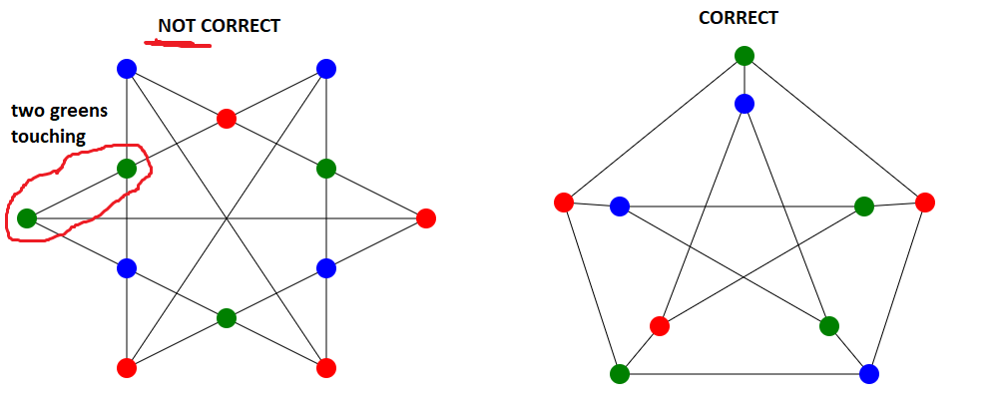
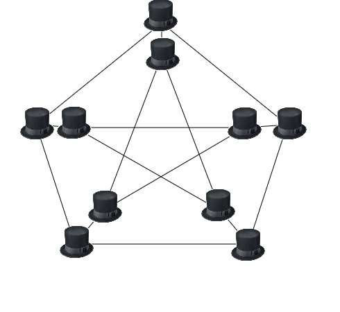
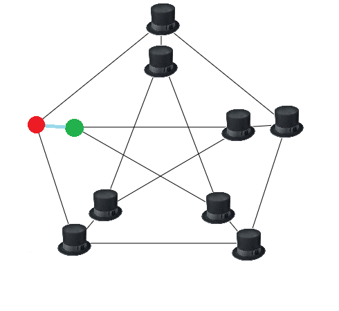
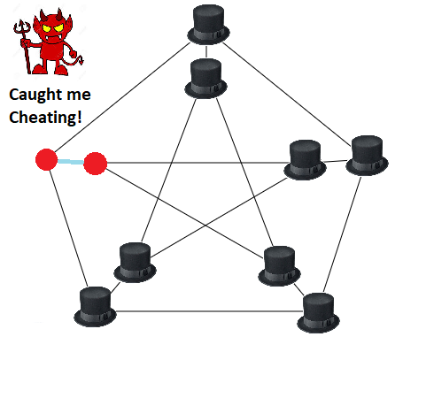

Zero Knowledge ProofThis page explains the zero knowledge proof protocol in simple language. ZK proofs allow a "prover" to convince a "verifier" that they have the solution to some problem, without revealing their actual solution. For our first example, we will be looking at a simple 3-color body problem. Example 1: You must fill in the a graph using only 3 colors, such that each vertex does not share an edge with another vertex of the same color This graph on the left is not correctly solved, two vertices share a color. The graph on the right is colored correctly. Zero Knowledge Proof: Let's pretend you hire an intern to solve the problem for you, and they email you after a few weeks claiming they have the solution. Woohoo! Unfortunantly want to be paid before they hand over the solution. They put in a lot of work, and if they just hand over the solution you might skip out on the bill, and they want to be protected from getting scammed! But you also don't want to fork over the money without knowing they actually found a solution, for all you know they could have just filled the graph in with random numbers and be scamming you! The Zero-Knowledge Protocol: You and the intern head to a warehouse and draw the graph on the floor. You leave the room, and the intern randomly shuffles their solution, swapping out the colors in the vertices on the floor, and then covers the vertices with tophats At this point, you enter the room and are allowed to randomly pick any single edge, remove the two tophats, and reveal the connected vertices If the intern was telling the truth, it does not matter which edge you pick, because if their solution was correct, the two colors will not match. If the intern was lying, there is a chance that your random guess will reveal their mistake, an edge containing two verticies of the same color. The "best case" scenerio for a cheating intern is to fill the graph out correctly for all edges but one. On a graph with E edges, a cheating intern has a (E-1)/E probability of getting off scot-free. For the above graph of 15 edges, there is only a 6.66% chance of discovering the bad edge. Obviously, you want to be more than 6% confident that the intern has a solution, so you will repeat this trial several times. You step out of the warehouse and the intern randomly permutates the colors again in secret. In order to be very confident (negligible probability of being scammed), you need to complete E^2 trials. This set of trials is Zero-Knowledge: It is impossible for you to reconstruct the solution because A) the colors in the solution are randomly permutated (shuffled) before each trial, and B) you can only ever see one edge at a time. At the same time, this protocol allows you to verify with confidence the validity of the solution. You try! You are the "verifier", pick an edge to reveal the colors below. | ||
| Confidence: 0% | ||
|
Note that the colors in the solution are randomly permutated (shuffled) between each trial. The prover must mix up the colorings between each trial, or else you could reverse engineer the solution. Click Turbo to speed things up. As you run more trials the probability that the prover is telling the truth (they have the correct solution) increases. The first graph has a solution, and we can quickly obtain >99% confidence that the prover really does have a correct solution. The second graph does not have a valid solution. After a few trials we will discover the shared edge and refuse to pay the cheating intern! |
A Zero-Knowledge Proof must have three properties:
The previous game works fine, but only because the number of edges was small. As the problem becomes larger, performing random checks stops looking like a good idea. Let's look at another, more complicated, example: Suppose you want to prove you have a polynomial P such that P(x) is an integer from 0<= P(x) <= 9 for all integers x between 1 to 1 million. We would like to do this without having to manually check all 1 million points. Random selection won't work well here, because it's possible a mallicious prover has a P that satisfies the constraint on 999,999 places but not on one, and random sampling will (almost) always miss that value. We need to re-arrange the problem a bit. Let C(x) = x * (x-1) * (x-2) * ... * (x-9), so that C(x) = 0 if 0 <= x <= 9 and is nonzero otherwise. C(x) is our constraint checking polynomial. Instead of checking to see if 0<= P(x) <= 9 , we can check that C(P(x))=0. Now we will mow rewrite our proof: prove that we know P such that C(P(x)) = 0 for all x from 1 to 1 million. Let Z(x) = (x-1) * (x-2) * ... (x-1000000). If C(P(x)) equals 0 at all x from 1 to 1 million, C(P(x)) must be a multiple of Z(x). The final version of our proof is: prove that you know P and D such that C(P(x)) = Z(x) * D(x). If the prover really does know P, it is trivial for them to find D by division. Now to implement our proof. This requires 3 steps. First, the prover evaluates P(x) and D(x) for all x from 1 to 1 billion (yes, billion). This includes the 1 million points where C(P(x)) = 0, and 999 million points where it (probably) doesn't. The prover then makes a Merkle tree of the evaluations and sends the verifier the root hash of the tree. The verifier selects 16 random x values from 1 to 1 billion. The prover then provides the Merkle branches for P(x) and D(x) at the 16 locations. The verifier can check that the branches math the Merkle root that was provided earlier, and that C(P(x)) = Z(x)*D(x) for all 16 cases. Is just 16 x values enough for this proof to be sound? Because C(P(x)) is a degree-10 polynomial composed with a degree-1,000,000 polynomial, its degree will be at most 10,000,000. Two different degree-N polynomials agree on at most N points. Therefore, a degree-10,000,000 polynomial which is not equal to any polynomial which always equals Z(x) * D(x) for some x will must disagree with them all at at least 990,000,000 points. The probability that a bad P(x) will get caught in even one round is 99%. With 16 checks, the probability of getting caught goes up to 1 - 10^-32, about as hard as computing a hash collision. We've now reduced our ZK proof from requiring many trials, as in the graph coloring problem, to a 3 step process Prover Sends a Merkle Tree -> Verifier selects random values -> Prover Provides the Branches for the requested points We can now eliminate the need for any back-and-forth between a verifier and prover and convert this into a non-interactive proof, verifiable by anyone. As before, the prover builds the merkle tree of P(x) and D(x) values. The root hash itself is then used as the entropy sources to determine what 16 branches of the tree the prover must provide. The prover broadcasts the Merkle root and branches together as the proof. The computation is all done on the prover side; the process of computing the Merkle root from the data, and then using that to select the branches that get audited, effectively substitutes the need for an interactive verifier. A malicious prover without a valid P(x) function would have to be exeedingly lucky tp spoof the proof. There is a probability of at least 1-10^-32 a fake proof will pass the test, somewhere on the order of billions of years of computation time. In order to demonstrate this process let's use another example problem. In this example the prover wishes to prove that they know P(x), the polynomial representing the x'th fibbonacci number. First, since the actual polynomial P must remain secret, we devise a test. If the prover can demonstrate that they know all of the fibbaacci numbers from P(1) to P(N), where N is a sufficiently large number, we can be confident that they have a correct solution to P(x). Let's choose 1000000 as our N value. This is similar to running many repeated trials in our previous graph-coloring problem. Before we begin, we need constraint checking polynomial C(x), to check if a given solution y=P(x) is valid. In this case C(x1, x2, x3) = x3-x2-x1 works, because if C(P(x), P(x+1), P(x+2)) = 0 for all x then P(x) represents a Fibonacci sequence. Now, let Z(x) = (x-1) * (x-2) * ... (x-1000000). Any polynomial (P) which equals zero at all x from 1 to 1,000,000 must be a multiple Z(x). Therefore the prover's problem can now be written as: Prove that you know P and D such that C(P(x)) = Z(x) * D(x) for all x. If the prover really does know P, it is trivial for the prover to obtain D(x) by by dividing C(P(x)) by Z(x) to compute D(x). In order to verify the prover's solution, the prover first commits to (ie. makes a Merkle tree and sends the verifier the root hash of) the evaluations of P(x) and D(x) for all x from 1 to 1 billion (yes billion). The verifier selects 16 random x values between 1 and 1 billion, and asks the prover to provide the Merkle branches for P(x) and D(x) there. The prover provides these values, and the verifier checks that (A) the branches match the Merkle root that was provided earlier, and (B) C(P(x)) actually equals Z(x) * D(x) in all 16 cases.By providing the root hash of the Merkle tree ahead of time, the prover proves they have the solution P(x) before the verifier asked for any values. The solution remains secret, and the verifier can check that all 16 randomly selected x values were valid. What are the odds that a malicious prover can fake knowledge of P(x)? C(P(x)) will have a degree of at most 1,000,000. Two different degree-N polynomials will agree on at most N points; hence, a degree-1,000,000 polynomial which is not equal to any polynomial which always equals Z(x) * D(x) for some x will necessarily disagree with them all at at least 990,000 points. Hence, the probability that a bad P(x) will get caught in even one round is already 99%; with 16 checks, the probability of getting caught goes up to 1 - 10-32; |
|